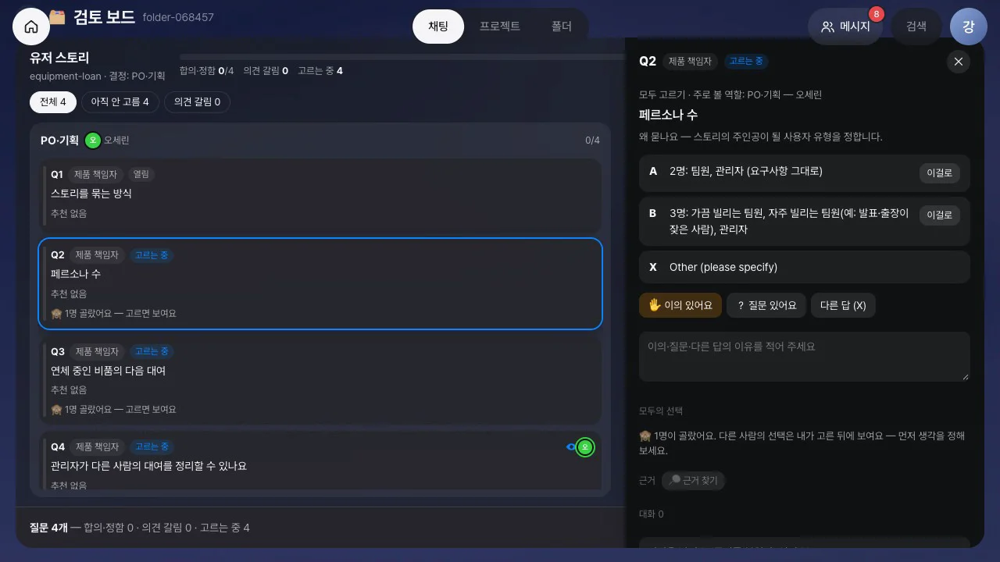
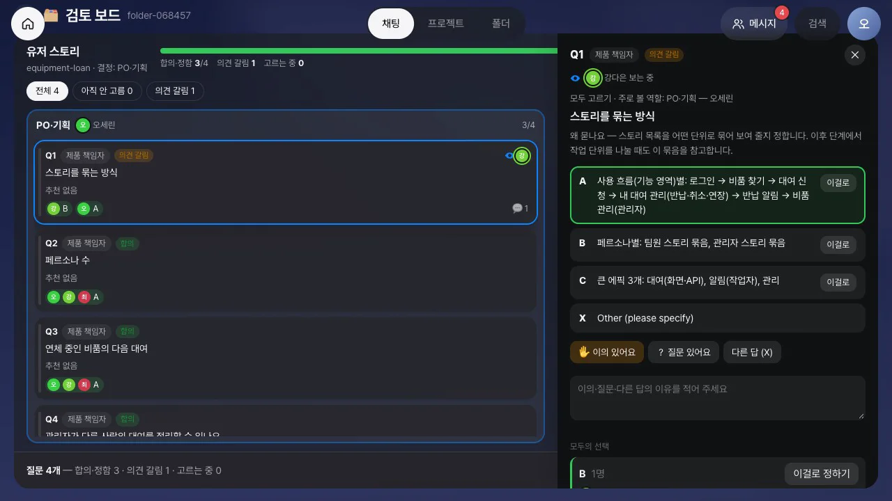
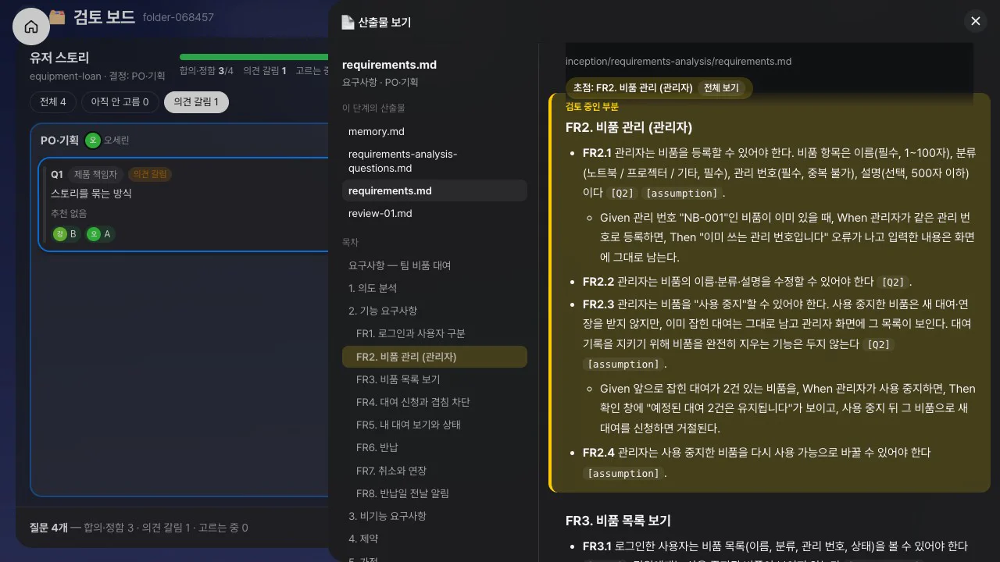
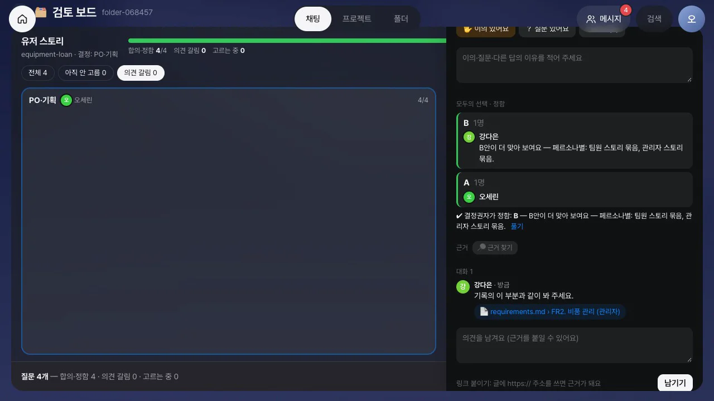
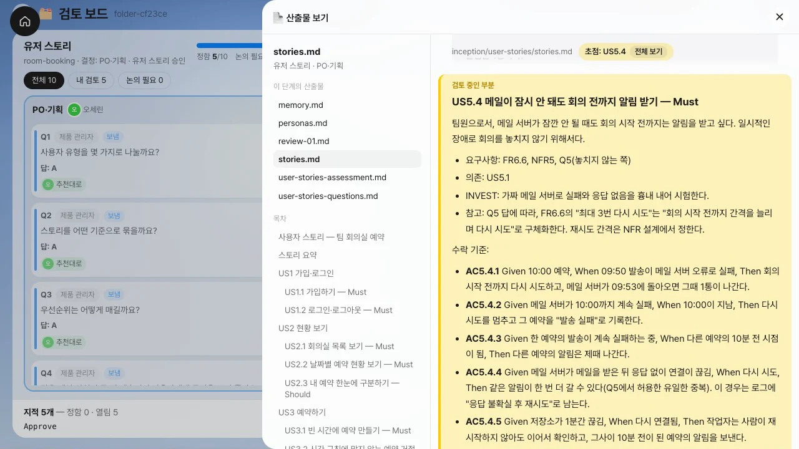
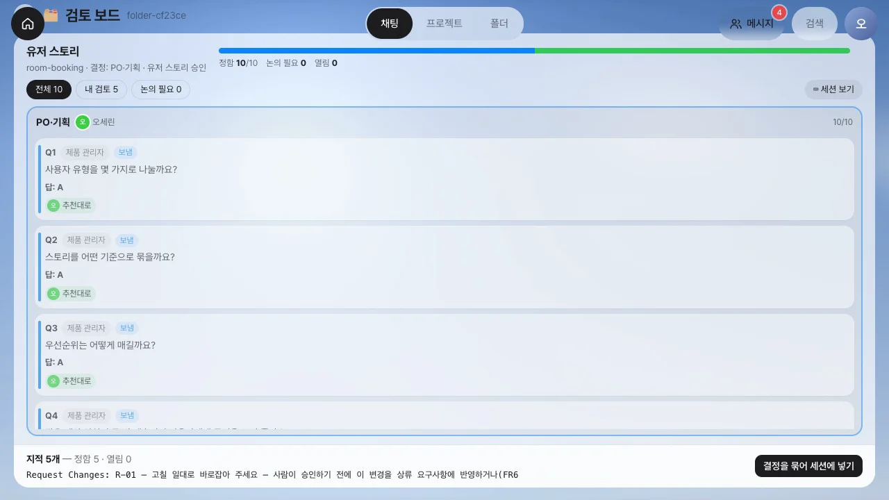

AI-DLC가 남긴 질문과 검토 에이전트의 지적을 카드로 펼쳐 놓고, 팀원 모두가 각자 답을 고릅니다. 다른 사람의 선택은 내가 고른 뒤에 보입니다. 같은 답이 모이면 합의가 이루어지고, 답이 갈리면 결정권자가 이유와 근거를 보고 정하거나 몹 회의로 넘깁니다. 이 장에서는 이런 방식을 택한 이유와 검토 보드의 사용 흐름을 살펴봅니다.
몹 정교화는 「함께 답하는」 의식이다#
1장에서 본 몹 정교화(Mob Elaboration)를 AI-DLC 원문은 이렇게 설명합니다. AI가 의도를 질문으로 풀어내면 팀이 답하고, AI가 만든 요구사항·스토리·유닛을 팀이 검증합니다. 원문은 질문을 역할별로 나눠 맡으라고 하지 않습니다. 팀이 의견을 모으는 방법(투표, 합의 기준)도 정하지 않았습니다.
질문을 역할별로 나누면 빨리 끝나지만, 아키텍트는 요구사항 질문을 보지 않고 PO는 설계 질문을 보지 않게 됩니다. 반대로 모두가 한 화면에서 같은 카드를 차례로 보면, 먼저 말한 사람의 의견에 다른 사람들이 끌려가기 쉽습니다(앵커링). 4장에서 다룬 고무도장 승인과 같은 문제입니다.
그래서 검토 보드는 플래닝 포커 방식을 기본으로 사용합니다. 플래닝 포커에서는 각자 카드를 엎어 놓고 동시에 뒤집습니다. 그리고 숫자 차이가 가장 큰 두 사람이 먼저 선택한 이유를 말합니다.
| 함께 고르기 (기본) | 역할별로 | |
|---|---|---|
| 누가 고르나 | 폴더 구성원 모두가 모든 카드에서 고릅니다 | 카드마다 그 역할을 맡은 사람이 정합니다. 다른 사람은 이의·질문만 남깁니다 |
| 다른 사람의 선택 | 내가 고른 뒤에 보입니다. 그전에는 「N명이 골랐어요」만 보입니다 | 처음부터 보입니다 |
| 합의 | 같은 답을 두 사람이 고르면 「합의」입니다(구성원이 한 명이면 한 명) | 맡은 사람이 고르면 「정함」입니다 |
| 의견 차이 | 답이 다르거나, 마지막 선택 뒤에 이의가 달리면 「의견 갈림」입니다 | 맡은 사람의 결정 뒤에 이의가 달리면 「논의 필요」입니다 |
| 의견 차이 풀기 | 결정권자가 근거를 보고 이걸로 정하기로 한쪽을 정하거나, 몹 회의로 넘깁니다 | 같음 |
| 언제 | 요구사항처럼 여러 관점이 필요한 단계 | 시간이 촉박하거나 질문이 전문 분야에 집중된 단계 |
모드는 해당 단계의 결정권자가 보드 위쪽에서 바꿉니다.
질문: 각자 고르고, 갈린 카드만 이야기한다#
AI-DLC가 질문 파일을 남기면 결정권자의 홈에는 해당 단계의 카드가 전달되고, 나머지 구성원에게는 「함께 고를 질문 N개」 카드가 전달됩니다. 카드의 검토하기를 누르면 검토 보드가 열립니다.
- 보드에는 질문마다 카드가 하나씩 있습니다. AI가 추천한 답이 있으면 답과 추천 이유가, 없으면 「추천 없음」이 표시됩니다. 현재 누가 어떤 카드를 보고 있는지는 얼굴로 표시됩니다.
- 카드를 열어 추천대로를 누르거나 원하는 선택지의 이걸로를 누릅니다. 추천과 다른 답을 고를 때는 이유를 한 줄로 적습니다.
- 다른 사람이 먼저 고른 카드에는 「🙈 1명이 골랐어요. 다른 사람의 선택은 내가 고른 뒤에 보여요」가 뜹니다. 내가 고르면 누가 무엇을 왜 골랐는지 묶음으로 보입니다.
- 근거가 필요하면 근거 찾기로 이 의도의 산출물에서 관련 문단을 찾아 댓글에 붙입니다.
- 답이 갈린 카드는 두 화면에서 동시에 「의견 갈림」이 되고, 의견 갈림 탭에 모입니다. 결정권자는 묶음마다 붙은 이유와 근거 원본을 읽고 이걸로 정하기를 누르거나, 의견 갈린 N개로 몹 회의를 엽니다.
- 결정권자가 답을 질문 파일에 적고 세션에 알리기를 누르면 답이 질문 파일의
[Answer]:줄에 한 번에 기록되고, 세션이 다음으로 넘어갑니다. 아직 두 사람의 선택이 모이지 않은 카드가 남아 있으면 나머지는 AI 추천대로 채워 보내기로 보냅니다.




위 그림은 비품 대여 앱을 classic으로 실제 실행하면서 PO 오세린, 개발자 강다은, 아키텍트 최민준이 유저 스토리 단계의 질문 4개에 대한 답을 함께 선택한 장면입니다. 이 실행에서 AI-DLC는 답을 추천하지 않았습니다. 따라서 각자 처음부터 판단해야 했습니다. 세 카드에서는 같은 답으로 합의했지만, 「스토리를 묶는 방식」에서는 의견이 갈렸습니다.
장 머리의 영상은 같은 실행의 도메인 설계 단계를 보여 줍니다. 아키텍트 최민준과 개발자 강다은이 질문 4개를 함께 고르고, 의견이 갈린 카드 하나는 아키텍트가 근거를 보고 정합니다.
지적: 고칠 것만 모아 수정 요청 하나로#
classic 스코프에서는 단계가 끝날 때 검토 에이전트가 산출물을 읽고 12장의 순환 의존과 같은 지적(Findings)을 남깁니다. 승인 창이 뜨면 지적도 카드로 보드에 올라옵니다.
| 고를 수 있는 것 | 뜻 |
|---|---|
| 고쳐 주세요 | 이 지적대로 고쳐야 합니다. 무엇을 어떻게 고칠지 적습니다 |
| 위험 감수(승인) | 지금은 고치지 않고 위험으로 남깁니다 |
| 해당 없음 | 이 지적이 맞지 않습니다. 이유를 적습니다 |
지적 카드의 원본 보기를 누르면 지적이 가리키는 문서(ADR, 컴포넌트 설계 등)의 전체 내용이 옆 시트에 열리고, 해당 절에 띠가 표시됩니다. 결정이 모이면 보드 아래에 세션에 입력할 하나의 결정이 미리 표시됩니다. 「고쳐 주세요」가 하나라도 있으면 Request Changes: …, 해당 없음으로만 정했으면 이유를 붙인 Approve, 모두 위험 감수로 정했으면 Approve가 됩니다. 결정을 묶어 세션에 넣기를 누르면 그 결정이 승인 창에 입력됩니다.
같은 실행의 유저 스토리 승인 장면을 영상으로 볼 수 있습니다. PO와 개발자가 지적 8개를 함께 판단하고, 고칠 지적 하나를 수정 요청 하나로 묶어 세션에 넣습니다.


직접 따라 하기#
Process GPT Lite 튜토리얼 31장 AI-DLC 검토 보드와 볼트 보드에 실제로 classic을 실행하며 이 흐름을 따라 하는 단계별 안내가 있습니다.
확인 문제#
함께 고르기에서 다른 사람의 선택을 내가 고르기 전까지 가리는 이유는 무엇인가요?
먼저 보이는 의견에 끌려가는 앵커링을 막기 위해서입니다. 각자 먼저 판단하면 의견이 실제로 갈리는 카드가 드러납니다. 팀은 그 카드에만 시간을 씁니다.
두 사람이 같은 답을 골랐고, 그 뒤에 세 번째 사람이 이의를 달았습니다. 카드는 어떤 상태인가요?
「의견 갈림」입니다. 마지막 선택 뒤에 이의가 달리면 다시 합의해야 하기 때문입니다. 결정권자가 이의를 읽고 정하거나 몹 회의로 넘깁니다.
지적 세 개 가운데 하나는 「고쳐 주세요」, 둘은 「위험 감수」로 정했습니다. 승인 창에는 무엇이 들어가나요?
Request Changes와 함께 고칠 지적 하나의 번호와 설명이 들어갑니다. 위험 감수로 정한 두 지적은 위험으로 남고, AI-DLC는 고칠 지적만 고친 뒤 다시 승인을 기다립니다.